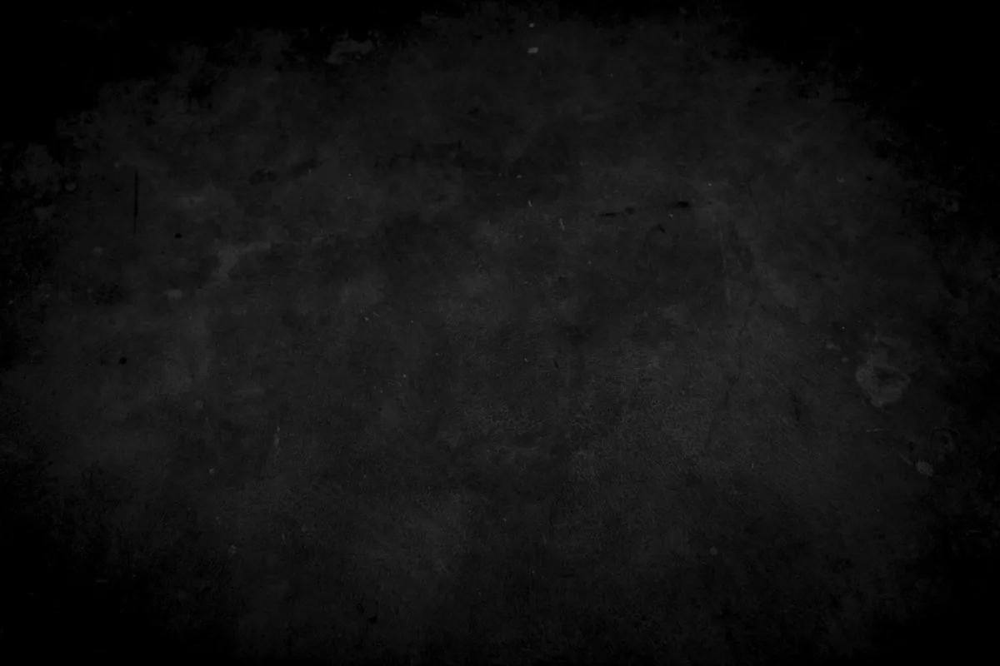

I came to photography through film — not as a romantic affectation, but as a demand for intentionality. When each frame costs something, when you cannot simply delete and re-shoot, the act of seeing becomes serious. Precious. You wait for the light to be what you need it to be.
My practice spans two seemingly opposite genres: the long, slow observation of landscape, and the quick decisive moment of documentary work. What unites them is an interest in what the light is doing to a surface — how shadow makes volume, how contrast makes weight.
Every print is produced in my studio darkroom using fibre-based papers and traditional wet processing. The physicality of the print is inseparable from the image. These are objects, not just pictures.

Three principles govern every image made under the LUMIÈRE name — guiding both the long editorial projects and the single-exposure fine art prints.
The best images are not taken — they are waited for. The light changes by the minute, the subject shifts, the geometry resolves. Working with large-format film enforces this discipline. You cannot motor-drive your way to truth.
A print that will last 200 years demands to be made with materials and processes equal to that lifespan. Archival fibre paper, selenium toning, dry-mount on museum board — these are not affectations. They are responsibilities.
One image from a project. Sometimes two. The discipline of the edit is where most photographers fail. The capacity to discard is the capacity to be honest about what actually worked — what the light actually gave you.
Featured portfolio — "The Slow Photography Movement and Its Champions"
Editorial commission — 12-page fashion reportage, Marais district
Profile feature — "Analogue Conviction in a Digital Age"
Documentary series — "Still Lives from the Pyrenees Highlands"